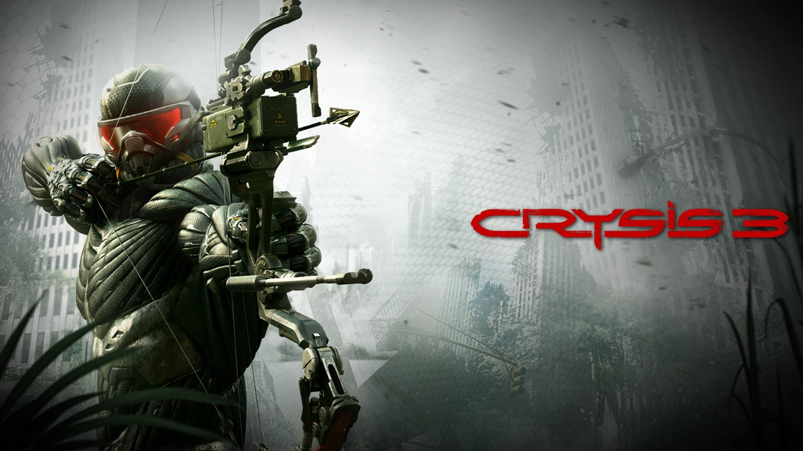

Crysis 3

PLATFORMY
PC
X360
PS3
------

Wiecej Zdj.
Trzecia część serii pierwszoosobowych strzelanin (FPS), stworzonej i rozwijanej przez studio Crytek w oparciu o autorską technologię CryEngine. Akcja gry osadzona została w roku 2047, czyli 24 lata po wydarzeniach ukazanych w Crysis 2.
Crysis 3 to trzecia odsłona serii futurystycznych strzelanek, w których gracz przywdziewa zaawansowany technologicznie nanokombinezon. Produkcja została przygotowana przez autorów marki z niemieckiego studia Crytek. Deweloper jest znany także ze swojego świetnego silnika graficznego CryEngine. W trzeciej odsłonie serii Crysis przenosimy się do roku 2047 i wcielamy w posiadacza nanokombinezonu Proroka, który staje do walki z obcą rasą Ceph oraz korporacją Cell.
Firma doprowadziła do powstania gigantycznej kopuły na terenie Nowego Jorku. Wewnątrz znajduje się zróżnicowany mikroświat, nazywany „Siedmioma Cudami”. Prorok wybiera się w to miejsce, aby poznać prawdę o planach Cell i wziąć odwet za wcześniejsze wydarzenia. Crytek postanowił przygotować bardziej zróżnicowane lokacje niż w poprzednich odsłonach swojej flagowej serii. Tym razem odwiedzamy wspomnianą kopułę, skrywającą siedem różnych rodzajów terenu – od gęstych lasów z przerośniętymi drzewami, przez bagna, aż po rwące rzeki. Takie zróżnicowanie pozwoliło ponownie pokazać moc silnika CryEngine 3, który pozwala generować naprawdę imponujące obrazy. Crysis 3 to w dalszym ciągu pseudo-sandboksowa strzelanka, w której podstawą są zaawansowane rodzaje broni.
Nową zabawką, jaką twórcy oddali w ręce graczy, jest łuk bloczkowy. W grze pojawia się także szybkostrzelny karabin maszynowy Typhoon oraz działko plazmatyczne o sporej sile rażenia – Heavy Mortar. Producent rozbudował też możliwości nanokombinezonu, czyli zbroi gwarantującej niezwykłą siłę, wytrzymałość oraz kamuflaż – dzięki niemu możemy hakować wybrane elementy otoczenia i wykorzystywać je w walce z przeciwnikiem. Wszystkie te gadżety i opcje można wykorzystać zarówno w kampanii solowej, jak i rozbudowanym trybie multiplayer.
WYMAGANIA
Minimalne:
System operacyjny Windows Vista, Windows 7 i Windows 8 Karta graficzna z co najmniej 1 GB Video RAM obsługująca DirectX 11 Dwurdzeniowy procesor 2 GB pamięci (3 GB w systemie Vista) Przykład 1 (Nvidia / Intel): Nvidia GTS 450 + Intel Core2 Duo 2,4 GHz (E6600) Przykład 2 (AMD): AMD Radeon HD5770 + AMD Athlon64 X2 2,7 GHz (5200 +)
Rekomendowane:
System operacyjny Windows Vista, Windows 7 i Windows 8 Karta graficzna z co najmniej 1 GB Video RAM obsługująca DirectX 11 Procesor z 4 rdzeniami Pamięć 8 GB Przykład 1 (Nvidia / Intel): NVidia GTX 680 + Intel Core i7-2600k Przykład 2 (AMD): AMD Radeon HD7970 + Bulldozer AMD FX4150
System operacyjny Windows Vista, Windows 7 i Windows 8 Karta graficzna z co najmniej 1 GB Video RAM obsługująca DirectX 11 Procesor z 4 rdzeniami Pamięć 8 GB Przykład 1 (Nvidia / Intel): NVidia GTX 680 + Intel Core i7-2600k Przykład 2 (AMD): AMD Radeon HD7970 + Bulldozer AMD FX4150
Minimalne:
System operacyjny Windows Vista, Windows 7 i Windows 8 Karta graficzna z co najmniej 1 GB Video RAM obsługująca DirectX 11 Dwurdzeniowy procesor 2 GB pamięci (3 GB w systemie Vista) Przykład 1 (Nvidia / Intel): Nvidia GTS 450 + Intel Core2 Duo 2,4 GHz (E6600) Przykład 2 (AMD): AMD Radeon HD5770 + AMD Athlon64 X2 2,7 GHz (5200 +)
PEGI


Język Gry

PL napisy i dialogi